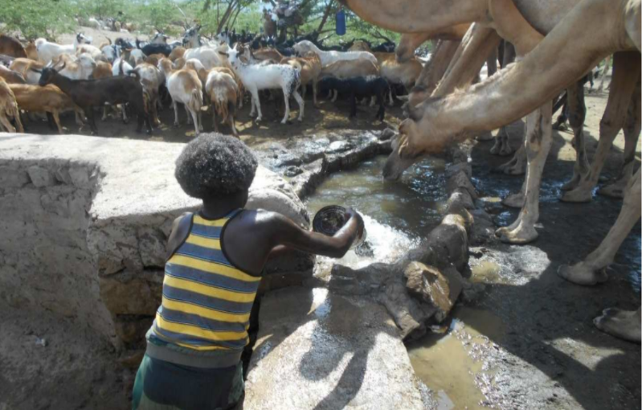
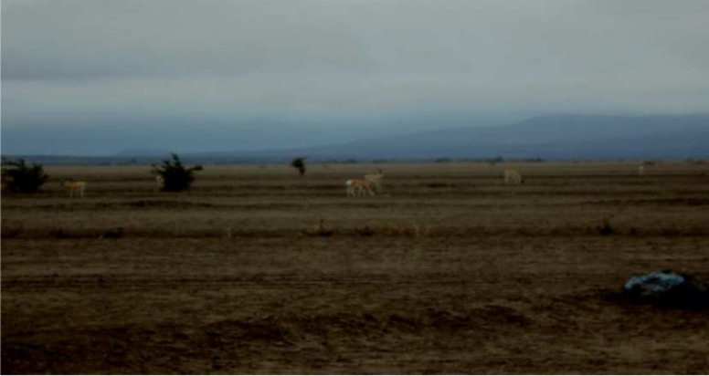

Dariifa kee dubaali Dacayro:
Qafar ummatta maggo karmah edde xoqosimtah tan qaadâ xiinissoh
siira kee madqa, ginô gadda kee garboh alluwweh dacayriiy tonnah
kaadu qeela kee dori leet elle xoqoysiman inna wagsissah tanim kinni.
2.1 Qeela kee Dori leeh Xoqoysoh siira kee Madqa:
Sehda ardi cutak lee elle geytimteh tan arooca Dora deqsitta.Qafar
qaaadaak ugutak ardi kedooda sittalih edde xoqoysiman kinnuk dori
leelwa elle geytimtah tan arooca kedooda sittalih edde xoqoysimtah
arooca kinni.Dareefa rob dagooh lee elle faxan innal elle geytime
waytaamih taagah ta aroocal kedoh adoytit butta buttah gacak sehda
kee saqah takkeh tan qeelitte sitta fakak/cutak sittalluk edde
xoqoysiman.Lee manol yanoonuh nabam faxximtaah raqsinnim
kinniimih taagah laqinih tan dareefal sigmah tan dacarsittoh xiina xaqul
kulliimik inkih fayyale caddo akah yaceenih yanin gadda kinni.Qafar
dacarsittoh xiina xaqul leeh kulliimik inkih daga raaqa geemat akah
yacen. Dora kee qeeli leet elle xoqoysiman inna wagsissah tan
eddexintitte kee siratitte lon.
Ahak dagal elle qaddowtennal, qeeli lee hinnay kaadu qeela sehda
buttah gacak ittalih ardi cutak/fakak/ geyaanaah abaanam takkay immay
faxeenik cankah hinnay nammay nammayah gacak qeela fakkasitaanam
duuduntah.Takkay immay xelfih maggoh tan dareefa qeela akkeey dora
dibuk,nammay kee sidocuk ittalih gacak fakaanah cotaanam gibdaamih
taagah inki dareefah ummatta sittaluk gacak sittalih edde xoqoysiman
qeela akkey dora bicsitan.Qeela/dori cutok kee fakimit suge wee mari
woo leet xoqoysimaamih cakki mali.Gibdaabini le caalatih addat anuk
edde xoqoysimaanam dirki kaa tabbixe way lewannak hinnay kedoh
abba amri geyam kaak qambalsimta.Tah akke waytek bood yakkem
bictah.Qeeli lee xayi’kel kak geytime waytah tan dareefal lee ardi cotak
geyaanam maggo wakti kee ariiqo faxxa.Dora takkeemih xer uddur
fanah ayfaaf akah yacennal axcuk bicsaaman faxxah tan wakti kee ariiqo
tonnah dagoomuk tambullem hinna.Maggo uddur kee ariiqo/sehdayti
cayla/ akah acayuk bicsen qeela akkey dorat xoqoysiman waqdi kah
abaanah yan dacayri kee kaal taqabi bahtam elle duude waytah tan
cugdat edde xoqoysimaanam faxximta.Leeh aroocal taqabi kataasah yan
maral digaala aban.Qelwa keee dorwa dacrissaah abbissah tan daga
raqta miroctiy too arooca lowsissah tan tan dareefa tanim kinnuk ta
mirocti qelwah abbobti/qeeli’bba kak iyyan.Qeeli’bboti lee xoqoysoh
akkinnaan siratitte kee eddexintitte abnisam,qeela akkey dorak
nagayniina dacrisaanamih mixxaaginna lon.

Qeelak lee ayyaaquk wadaraay, laa kee gala yafqen waqdi.
Leeh qelwa kee dorwak dareefa xeflih coox kee keenaanit axawah tan
gasoosa akah bicsan.Buxah saqi coox, kallayto kee xeetik bicseenih yan
qunxa dorwal taaqabe.dacarsittoh xiina lee meqennal saqah bicsen
dorwal qulak sinni saqa leek yafqenii kalah qeela/dorwa bayissah
duddah tan kalah tan aroocal saqa mayafqan.Qeela lee targa hinnay lee
edde yayyaaqenih yanin mingil akatat axayuk qeelak lee yayyaaqen kee
inkinki qelwa kaxxam adda kak xeeriimih taagah too gide takkem
maggoh yan mari culaah elle yawqeh feereynitte soola k sittak
tabaatabisak lee yayyaaqeenih saqa yafqen.Kaxxa adda leh tan qelwa
koonoy kee wohuuk maggoh yan sitta catak yayyaaqeenih yanin leet
saqa yafqeenim oyta tacayo tescesse.
Leet elle xoqoysiman inna wagsiisak,kulli buttah adoytit saqa yafqeenim
faxxintah tan ayroora keenih yayyaaqen.keenih heenih yanin miduk iroh
tan ayro midu leh yan mara lih bood ugsaanam kee tohih sabbatah
taqabi ugteh yenek lee xoqoyso wagsissah tan madqa kee eddexintitteek
ugutaak qellateynit yakken.Gifta casan kee macammad acmad elle
ittennal inki num kay midu akke sinnih tan ayro leek saqa afqeyyo
iyyeh yeffertimeeh, tokkel taqabi ugtek fiqmah abba kee kedoh abbah
amriik ugutak inki ala,wadar akkeey hinnay kaadu laa akah yacennah
aban.tahat ossotinah lakqo digaala keenil haanam xiqqimtah.Ta digaalah
mohoodo dumaak xabba haanam sugtem kinnuk away fan edde
xoqoysimak geytiman.Yekkeh yan taqabit sehdal biyak kataasek tonnah
madqa rakuh haak biyak elle aninnaan caddol maruuso meklan.Lee
dacayri axcuk alifeenih yan gaso iggilla heenih saqa kak
culsaanaah,isinnih culak saqah lee qulaanam gibbataanam kee qeeli leel
taqabi katassah tan abinitte abak geytimaanam digaala le.
Garbo kee Garboh alluwwe/dibaali/ dacayri:-
Maggoh karmah sugteh tan mablooli kee madqa rakuh haak buxâsaqal
taqabi kataase waytah tan garboh alluwwe kedô gadda abak yableenih
oyta tacayo qaddosse(Cajji illalta kee ibraahim abubakar, agda
baxisso,2008 I.L.L).Garboh alluwweh dacayri kee hanaawi wagsiisak
gersi daqortik geytimteh tan oytitte ta yab maqarrossah tanim
kinni.Qabar kee maaqiddi boola tanih tan waqdi garboh alluwwe kedoh
abbah amri beyak qidaanaah maaqoh ayfaafah edde xoqoysimaanam
duddah.Dacayri akah abaanamak inik hatto sabab gibdaabini yanih yan
uddur maaqiddih edde xoqoysimaanam kinnim qaddoysak, gifta camad
muusaay,qali macammad kee duqur qali elle ittennal’’awayih uddur
kedoh abbobtih reeda kee anay salacah yemeeteemih taagah kulli num
aaxagih isi tuxxiqih garboh alluwwe taqabi kataasaanam hinnay
qidaanam waqdik teyna tambullem kee ayyunta kee buxâsaqal taqabi
kataase waytah tan saraay,wayxaxeey,segeeri,goroyyaay w.w celtah tan
garboh alluwweh madqa dacayri akah takkennah amrissa’’(agda baxis
2008).umah tan garboh alluwwe kak iyyan alluwwe takkeemih sehda
kee saqa aymise kalah tanim fan aaxigah qidaanaah diriyaanam oggol
mali.Madqa cinak garboh alluwwel taqabi bahaanam hinnay qidaanam
qellat akkinaanih gide digaala keenil takke.Ceelalloh; go
num saga akkey wadar digaalah yaceenim sugteh tanim oyta tacayo
warisse.Tahat axawah awayih uddur kedoh abbobti qellateyni kataatak
digaaloonu kee garboh alluwweh dacayri abaanu xeqsissah tan
eddexintitte kee madqa abnisoonuh dudda daggoowa
yescessen.

Wayxexxa
Garbo kee coox dumaahih udduruk qimbisak kah faxximtah tan dacayri
akah abaanam gifta macammad kiru,macammad qabdu kee kalah tan
oyta tacayo baxxaqisse.Awayih uddur baxaabaxsale sababitteh coox
yargiqeenim tambullem kee tet dacrisaanam kaxxa taqabi akkuk
temeetem takkay immay qafar qaada kee ginô gaddal loonuh yanin
mablah rakiibol coox yargiqeenim waaso le.Madqa tonnah caxa yirgiqe
num elle diggalsima caalat yanim kee coox argiqewoonu kee garboh
alluwwe qidewoonuh daga raaqak lowsissam kedoh abbobti kinniimih
kulli makaftootil tonnah ta caagid kataatak gaanun fanah xayyoosah yan
mara awlisak akah taamitan innah aban.Baxsaluk naba naba coox kee
caxâ miru le coox yargiqeenim kaxxam waasoleh tanim kinni.Buxa edde
xisoonu kee kalah tan caagiidah ayyunti coox faxek, ta nabaah caxâmiru
xaltah tan cooxuk irok tanim elle faxxintannal edde xoqoysimaanam
waaso mali.
Waasoleh tan coox yargeeh, garboh alluwwe qidah yan mari kedoh
abbal xayyoowak madqa rakuh haak ilaa 12 reyta fan guftah tan
digaalah diggalsimam bictam oyta tacyo warisse.Qellateynit ta abini
waasoleeh,digaala lem yaaxigeenimih taagah keenil madqen digaala
raabitta heenih oggolan.Tanna celtah tan ginôgaddah aban dacayri
kaxxam tuxxiqlem takkay immay kaxxam boolattem kee habbaltimteh
tan baaxoh addah ixxigaagi kee cogdaadi kalah tan tanna celtah tan
abnitte akke waytu kee tekkek ken gufam duudah taqabi yaysixxigeenim
kee barsaanam le kabuki fayyale tuxxiq leemih taagah edde raddeh tan
caddol fayya haanam kee sarrimaane taalluh nabah tan taama abaanam
faxxinta.Awayih uddur qasriinu le xiinissoh siira, duma sugteemit
taaqitem kee kuriyyi dudda boolasak temeetemih taagah ahak naharal
qaadâ xiinissoh siiral garboh alluwwe kee cooxuh abak sugen dacayri
kee tacabbudo matana edde iyyan caddo gufteh tanim oyta tacayok
nasmitem xiqne.
Coox yargiqeenimit axawah oyta tacayo elle ittennal’’qafar naba coox
yargaqeenim kee godma gaba haak garbo gexaanamih abto
malon’’(agda baxisso,2008).Taham coox yargaqeenimih abak raag
allewaanamak mascassa abak tambullem duddam kinniimih xayi uddur
wadir diyyi kee qarwa xisneey tonnah kaadu culenti raceena edde
xoqoysimoonuh coox yargaqeenim fidinuk tambulle.Takkay immay away
boolat geytimtah tan baxsaluk ginôgaddaay, garboh alluwwe kee gersi
ginôgaddih dacayri wagsiisak tanih tan mablooli kee gaanunitteey
tonnah kaadu ayyunti qaadah kinnaane mascassa abak gexsiisak sugenih
qaadâ radmooma elle sugtekkel maqarroosak gacsoonuh giffole macal
abaanam faxxinta.Tahaak ugutak ginnimteh tan salacitteh sabab kee
fidga meexak yaaxigoonuh catah kusaq elle faxxintannal gexsiisaanam
faxxinta.
Qafar dacarsittoh xiina kinniimih taagah qaysoh aroocah nabah yan
hangi yacen.Buxâ saqa qayso elle tan ikke beyak yayloolen.Qaysô
gunanah akah gexan gexoh afiito lon.Tahak xaquk taqabi yan wakti
axcuk deesan qaysole arooca hinnay kaadu qaleela le arooca deesan.Ta
arooca sehda kee lacak dacrisak qayso kah elle taabukennah abanam
kee tahak madma gibdaabini udduruh takku waytah tan qayso deesak
sugsoonuh hinnay kaadu gibdaabini uddurih bica yaanam
duuduntah.Buxâ saqi takkeh tan maaqo baytek kedoh abba baaxoh
idoolallih gacak ayyunti deesak sugen aroocat akah xoqqoysiman innah
seeco tatrusa.Xoqoyso wagsiisak kulli arooca inki’uddur buxâ saqa
ruubanam kee qayso kah qidaadisan inna elle aban migdal takkem
kinni.Tohih raakibol caddo caddoh baxsale arooca saqi akah
gufewaannah abak qidaddô tuxxiqil akah assannah aban.Kedoh abbah
amri sinnim gibdaabini udduru iyyeenih deesen aroocat saqa
xayyoysaah aylooluk geytimeenik kedoh abba fan xayyoowak ilaa 12
reyta diggalsimam xiqqimta.
Qafarak qaadâ daylih ixxiga-
Qaada daylih ixxiga leh yan mara karmak 15 liggidaak xabba
haanam qaadâ yaceenim duudan.Ixxiga leh tan alaaqa,
qunxaaneyta, furrayna kee idoola daraafil yanih yan biyaakitteh
daylitte aban kinnuk a mehrat nadol baxsa mali.Labim takku
sayim takku qaada dawoowe massoosak dalkeenit daylisaanam
duudan. Mangoh tan qaadâ daylaabeenit dacarsittoh xiina takkay
immay dagoo mari keenik dibuk qaada daylitte aba.
Daylaabeenit ginok geytimta dawoowi massoosak biyaakitte
urusaanam kee kalali ixxiga sinni buxaaxih marak nagrah axcihiiy
abbowtiiy,inantiiy, annonti kee qammik nagra kee abak raaqah
geyaanah yanin ixxiga kinni.Tah yaanam hoorak horal,buxâ
maraak-buxâ marak tabaabak temeeteh tan ixxiga kinnim
tascasse. Mehratleela biyak weeloola kee dawoowi macak
bictaah, biyaaka marah magide akak yaceenim kee mannal
yaceenih hoorak hoorak tabak temeete nagra kee abak raagak
geyeenih yanin ixxiga kinni.Takkay ikkah qusba biyaakitte
ginnimtah tan waqdi, dayla gibbatul kah ginaanamih dudda
lon.Qusba biyaakitteh dawoowe ginaanam dubuk hinnay nagrah
geen ixxiga aysaasuk away edde nan qasri dayla fanah gufteh tan.
Qaafiyat taqbitteh calli ummattak ceelo dacrisaanam kinni; fatoh
qaadah ixxigalluk qusba caalatat korisak adda milaagu qudduumat gexsit
nek qammaalimtam kee gino caaloota kinni; qagsak 2007፣3. Takkay
immay qaada daylaabeenit ixxigal qundulaanamak buxa marah abuk rati
geynam kee osisneh /niysiise/ixxigah ossotina aki maritteh mehrat leelak
baritto beyaanam kinni. inki tu yaaxagi aki mehratlik baritah yanim
maaluy illiy wadaraay laa kee gaala acayuk kinni. Takkay ikkah ossotina
numtin amo kee cangalah warisaanah.dawaata yargiqeenim asaaku
margaqina iyyaana qado qakle qammi baxa 26/05/2008/. Inkih tan qafar
daylaabeenit ixxigah caddol abukraqtil yeenih yaninyaysiiseenim kee
qusab dawoowi yaklukeenim kee ixxigaleh yan numuk ixxiga beyak
baritto geenih yanin baritto buxanmmaraakee ummattah tabisaanama
kinnih mehrat leela ummattah qaafiyat dacrisoonuh loonuh yani ugtuma
dagal edde yabnem dubuk hinna.Aaxige waan dawaai witte inki aki
ixxigale mehratli leh yan dawa xaamaanam kinni .Aki ossotinah qaada
daylih ixxiga mehratli akah geyaanam xiqaanam yakriyen waqdi
kinni.Qafar umaatta muslimiin diini kataatta ummatta kinniimih sabbatah
qafoosiyya dawoowi qhura’an kitab keenih amrisah yan madqooqi kee
shuuraay kitab cadiisiiy tonnah kaadu qarabik yuktubeh yan kitab
daffeseenih yanin dawoowettet yanti fiqeenim kinni.
Qaada mehrat leelak dawoomuh migaq bicsaanam kee massoosanam
takkay faxe sahadaytuh maqaddosan dawoowe sirri kinni.Abuk-raqti
tabaa tabsaanam buxaaxi marih fanal yan masquuliyat leh yan sirri
qammaalim takkay qiku boolassa.Inki num hargah yan uwwaytu kee
gadda raaqisah yan baxa awkiino kinni qafar qaada daylaabenit le der
sanoota kattaatak qaada daylitteh ixxiga lehyan gaddalitak culenti
raceena inki biyaakita num urah yan waqdi forkacatat fayla yaallem
ummattah catotta kee galto taallem faxximta.Caylale siitalluk alliyyi
gexsit ginaanam abukraqti caaalat dubuk buxaaxi marih gexsit
kinni.giclol geytimte dawooweh ixxigal elle xiinan inna kee xintima buxa
esseroora gacsaanam baaxoh caddoh ixxiga kinni.
Kalah ossotina sirrih tanim inki inki mari yalli keenik dubuk keenih
yeceem yakkaleenih aki marak ixxiga loonum mayakkalaana qaada
dawoowet yintifiqeenik wadir caalatal jinni biyak keenit matram xiqa.
Inki inki walfi takke wadoowe jinni yabbixsiisem/ cajji macammad
ibraahim qabdalla \14/05/2008 ill/. qaada daylaabeenit baacytittey
qayxiixaay aki lakqo siinni marah ayfaf yaceenih takkay ikkah iko leeh
yan daylimah yan mari 100birrik xabba haanam bua saqi gaalak meklam
xiqqinta.mek lah ambalaalaq bah yan mari yaniih inki daylaabeeni biyak
lehyan numu ayse week afal beeh sugeh yan lakqo gacsa abbaheeh
ambalaalaq abinal maasoosa qaada daylaaneenit num numuk saq saqak
tabtah tan lakmitte daylisaanam kee kalalaanam aftabu kalalanamih
dudda loonuh tabaa tabta lakmitte daylaabeenitit akah tabe waytannah
cugda loonuhkaxxam suruyta lak mitte aftaabic takkeemih daylaabeenat
akah tabe waytannih ixxiga loonuh.
Qafarak qaada daylaabeenit inki biyaakitanum kulli waqdi inekiik daga
biyaakitte tenek inkih yan biyaakitte takkay dawoowe inki adda
mayacaana.naharal qaffoseh yan dawa yaceenimih giffole biyak xayi
uddur kaxxam biyaakisah yan lakima kinni.
Qafarak qaada daylih ixxigak ugtuma keenih tontocowwe acwa iyyanam
kinni. Bar xintimal soono / amoggacal /inti nablem lino. Takkay gital
genah nan dayli cugda abuk raqtik geynah nanim tayse dayli cugdah
geyneh nan abuk raqtih geyne daylih cugda assakat le kaxxam qaffoote
marah kinni iyyan. Ossotina dawa akah argiqe waan inna kee dawoowe
woo akak geytimte caalotah ambalaal kee garuq sinni dawoowih
tamitaanam kee doorit warsaanam kinni. sinni buxah gexa axcuk
iyyaanah dawoowi argiqiyyi sinni buxah tuduureniik geera baxbaxisak
iroh tammullem gita hinna/ zakare/ /xaaqimaanam / buni alo koram
korsak alaysan, buna caxak kalah isi qaadah dayla abe bunak uqubba
heeh isi buxah addal digbah akke waytek, biyakitah ibitte kee gaboobi
tittak xabba hayteh yok biyaakittah tan axcuk siital qikitak aban
dayliyanih / qado qakle qammi bara 26/05/2008.
Dawoowih elle yargiqen siira/wale-
Qafar daylaabenit buxaaxik awaquk dawaata kurak ilaa yaduurenih gide
maadanam fan inki inki dayalaabenit sinni adabi yalloonay immay
assimah loonuhyanin abnitte loonu inkih tan daylabeenit assima takkay
matartam caalatittek ugutak buxak bukka iyyeenih qaafiyat dacayri
daylaabenit/tahaara/ sinni buxah abaanama. Alaaqa akak iyyan urruh
lakat lakat / beyaanama gexsit kinnih gexsit argiqe kal /daaco
absiisaanam kee alaaqa takku akim alsi addat qabali akak duddal barra isi
buxalluk addah angaaraw taallem faxximta toh akah kinnim buxah addat
dagar kaqlise waanum yenek sartan saytunaane akah alle wayta taqabil
buxaaxi mari addah angaaraw haysitam faxximta.kalah cane kee naaga
/umammacsub/sinni moyyal gaaboy saanam dawoowi yargiqeenim
faxxiine waytam kee biyaakita numuh umam acsube axcuk siita
biyaakanam mafaxximta. Sinaamalluk yangooroweenim kee yaabisaanam
sinni moyyal geysiisanam salaam kee ramaqqa koh takke; toh akah
kinnim alsi fanal aki mara hammi kee umaane abaanam saytunaane
taama kok bayissa . Inkih tan daylaabenit koh tecee dawoowe adabal
xagaanam tayse.Mangom buxaaximari isi caddaol biyaakita marak miiso
/meklah/ lakqo harigga heenih caxa dawagga ruuquh gexaanam kinni.
Takkay qaada daylaabenit sabtiica loowak /zikri/gexa mari yanih zikrik
abaanam diini caddol kaadu amrisa.zikri yaanam yallih migaq ugusaanam
kee faylisaanam kinni.Zikri umaanek Koo wassam kinni. Taama nek
meqe taamay duddale takkem xita ; intem /qadobaxa hubbile ; afambo፡
29/05/2008.
Tu-maleela kee qayxiixa ina kee abba alle sinni alaaqah keenik tu
beekal annaak ken daylisaanam kinni takkay ikkah dagoom baxa
biyaakita marak miisoh/ caxa dagoh/ beyaanam tanim kinni takkay
miisoh keenik beenim quxuumu yaanam keenih yeccen dawaatak mekla
keenil abbanam keenih yeceen dawa argiqe kal keenih elle amrisen innal
xagaanam kinni garil daffes targiqeemik gabat luk gexak yargiqen caxak
yargiqen caxat yaxeeni malcina arroqtay lowte gabat beyak targiqe faxxa
caxah garil daffessam kinni .
Xeflih qaada daylaabenit siita geyya hayteh siitalle geen dawaata
yargeqeenim faxximta; ayro laqoh tan waqdi akke waytek bari yakke
waqdi garuq yakkem mafaxximta bar tekkek jinni caxal yanim tu
taaxago qaddosse takkay tu taaxago caxak gari gufta waqdi daffa inteh
taqrifem/ramaqqa/faxximtam kee yargiqeeni faxan caxa silaalo gammi
magacaanay ayrota gammi gacaanam caxak gacaanam faxximtah; kalah
jumqataay soom alsaa kee qiddi ayrooraay qarfah ayrooraay mawliid
ayrooraay rob radot yan waqdi caxa mayargiqan dawaata yergiqeenk
sarra buxa cule kal robti lee xagee kee lee xage takke mafaxximta/
xogge gudda le tataalak / 24/05/2008.
Mehrat leelah/daylaabeh/ dawaata akah taamite
waytannah/ abinal kalta abtoota-
Rakaakayal ayyunti horaak horal tabtabisak der karma sugteh tan
biyaakite numuh yeceenih yanin diwaata bayissa/abinal asekalta
abtoota ahaak gubal kataytam teeti.
• Biyaakita num dawaata xabbaheh fidoh angaaraw abam
hinnay fidoh angaaraw abaanam xiqsiise wayta dawa luk
angaaraw abek;
• Dawaata giibit anuk daacu abaanam edde duudewan
dawaata gabat hayya heenih daacu abaanam
• Biyaakita num barrah angaaraw edde duude waa
dawaatootit antafaqik barrat an gaaraw abaanam kinni
• Biyaakita num buxah addal barra luk fidoh an gaaraw aba
numuluk qaril gacaanama
• Biyaakita numih buxah barrat yon goorowe num dagarah
kaqlekal dagar gabah kaak xaga mari yanim kinni
• Kalah kaadu kaah tontocowe dawaata mihratali elle kaah
yecena hinay geeri innal yantifiqeenim tanim kinni
• Kaadu kalah inki inki dawaatay celalloh baaxoh ali
dawaata tan cettah dubuk yan qarih addat kaa haanam
kinni
addat xintek inki num yabixem faxximta woh akah
faxximtam biyaakita numut arteh tan ali qide weenik woo
ali edde tantifiqeh tan coox kee ballaqe kah sunuytam
takkeh woo duyyeh goranah tamaate wak biyaakita
numut edde arteh tan saaqat bacar haytoh ayro woo edde
arteh tan numih arac amaatuk nammay haytoh kaat qaqiita
axcuik qemitanam kinni
• Kulli dawaata hinnamay inki inki dawaatak makmoh
uddur tatrek tantacuwe uddur barra luk yon gooroweenik
dagar kaqlise wee mari yenek
• Biyaakita numuh yaceen dawaata canalluk esgella hayteh
garcite kalak canti afeenat kalahqanah dawaata edde facse
kal alsi sunna edde hayte barra xoqte dawaata biyaakita
numuh yaceenim gita hinnam kinni.
• Qaada daylaaba daylima numuh akme waam kee aftabi
wee caalotat antifiqqa iyyeh kaah yaceeh yan mikirit
antifiqe waah w.w.tan taqitte tanim kinni
Qaada dawaata caxâsiifi [qabaya]:-
Dawaata dumaak ummattak qemmiteemih tan wak coox
samaday buxa saqih fayxixak abak baxak baxal tabtabisak
temeetem cooxuy maaqoy dawaataay siragle lee kee geeri
kaxxam tuxiiqleem seedaytu dadalah fanah baahu qiqa
cooxuk saydayti fulale gaballuk gexam faxximtah tan
dawaata leemi seehadayti baxi coox dubuk hinnay duyye
kee dahab dawaatah bicisak geytiman adawaata- udduruk
uddur aftabuh koraanam kee dawaatah korsaanamih
uddur loonum kee tukalootuh korsaanamihtaama takkem
kinnim kee tuxiiqil korsaanamih taama kinni.
Duma tuxiiqi kee aydaadu luk temeetemi kimmro sinam af
kee afay ara keenik akkok aysaamuk sugeenim masoosak
qino xalootiti biyak angoyya biyaakite dayliseenih axcuk
biyak kalali kitooba axcuk edde antafaquk qeytimta
Brenner 2006=2
600,000 sanootak afat ahaak yedderek taygeris kee efraaz
daqarelle sugte soomali iyyan ummatta; 4000 sanoota kerustoos
ubkah ayrooraak afat ginnimte dawaata gibsi 3700 sanootak
kestoos afal sugteemik iroh /lrfan 2005 /79 tekkeemik
saahadayti tuxxiiqih wacaysir arooca takkay taqabiyaniimi
kinni.inki inki caxa dawaata acayuk makaadohtan aroocah tuxxiq
yaceenim faxximta qaadak qaafiyat dariifal [WHO]qaadah addah
dawaata kee daylaabeenit lakat /Valuc / baadak qaafiyat meqem
abitto cogayso/WHO/dadalte tan baaxol geytimta dawaata tuxxiq
le 21000 baadal qaiyat meqem abitto eglaali /WHO/daqalte
baaxoxal yeytimtah tan ummattah addal 80% ummatta qaada
dawaat antafaquk qaafiyat dacayrih fayxi kibbiimelem tamixxige
.Chayna ayro mawqa baadak aydakaakanime marak 80% d.r wak
qaada daylih dawaatat antafaquk biyaakita marak biyak maca
kinnim abaluk qaada daylaa beenit ixxiga leela ruubaanam
qebbisaanam tekkem kinni /refer/ /lowis 2003 3/
80 kee 90 bool loowintaetobbiyah ummattay qaada dawaatat
doqoy simaanam kinni /gaddale 2007 153/ qafar ummatta qaafiyat
fidinaane aki baxooxak caddo luk mohoodo addah tani kinni.
Rakaakay alaaqa raba baaxoh caddol fayyale caddo gufem kinni
/rate/ zool/NCTPE: 2009:4/
Takkay baaxl fayyale caddol geytima takkay itobbiya kee gersi
qafar karaakayittel ummatta boola lafitak lafitam tammulle tahaak
ugutak qaada dawaata yani calwayaak ugutak ummattah caddo
ixxima obak obtam keeni akkabaabi/daraafi/ ginook baaxol caalat
elle le gexsitit baxaabaxsale dawaata ixxiga 1500 gaba
bahtamaak daga xalay kee 116 gaba baaxol xaltaama biyaakitta
caaloota baaxol tanim takkay baxaabaxsal aroocal geytimta dahab
maqaxinaat daffeyta arooca tanim kinni. qagitak daylaabeenit
itixxga mehrat leela akka baabit raqta baaxoxa tanih tohyaanam
jabiiti eletriya xalootuldawaata tuxxiiqile dawaata le .
Qafarak qaada daylaaba mango udduura mangom tammulle edde
daylimenim kinni ixwet yantifiqeenim kee camukka qoborti xala
haak gaysat atka amataake birro darqi ayyuufa ayrot boco kee
boffa gorra guabal mangom buxak canaay, subacay,qittaay, araba
ruko galaqto tiro loti daaco canaay,takkay mango caalota tanim
takkay dahab luk xiqtaamak mango dawaatay tuxqle lem kinni.
garbo duwaalay addal le baaxoh alwa addalle garbo kinni/rasu/
duwaali cadoo kee jarji cado inkuraarit maaqoh alay soh baxa
edde luk.qaadah caakima dawaatat baye kalta fakkentat
yantifiqeenim kinni.qagitak baaxo maqaxinaat
/dahab/addalbaxaabasale bulaaqe le solta bullaqe caacay
uguttaamah ugutta bullaaqe gexak radde gaysa luk ugutta caaloota
tainim kinni qasbo-urak xaa kee bado dawaata ladda
yantifiqeenim.